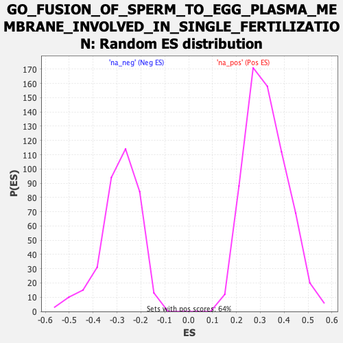

| | | Dataset | CK_basal |
| Phenotype | NoPhenotypeAvailable |
| Upregulated in class | na_pos |
| GeneSet | GO_FUSION_OF_SPERM_TO_EGG_PLASMA_MEMBRANE_INVOLVED_IN_SINGLE_FERTILIZATION |
| Enrichment Score (ES) | 0.7014528 |
| Normalized Enrichment Score (NES) | 2.1559963 |
| Nominal p-value | 0.0 |
| FDR q-value | 0.0063798237 |
| FWER p-Value | 0.043 |
Table: GSEA Results Summary
 Fig 1: Enrichment plot: GO_FUSION_OF_SPERM_TO_EGG_PLASMA_MEMBRANE_INVOLVED_IN_SINGLE_FERTILIZATION
Fig 1: Enrichment plot: GO_FUSION_OF_SPERM_TO_EGG_PLASMA_MEMBRANE_INVOLVED_IN_SINGLE_FERTILIZATION
Profile of the Running ES Score & Positions of GeneSet Members on the Rank Ordered List

Fig 2: GO_FUSION_OF_SPERM_TO_EGG_PLASMA_MEMBRANE_INVOLVED_IN_SINGLE_FERTILIZATION: Random ES distribution
Gene set null distribution of ES for GO_FUSION_OF_SPERM_TO_EGG_PLASMA_MEMBRANE_INVOLVED_IN_SINGLE_FERTILIZATION